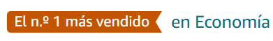

Cómo hacer que te pasen cosas buenas
En Cómo hacer que te pasen cosas buenas entenderás la importancia de aprender a enfocar tu atención y descubrirás pautas para combatir los miedos.
Comprar en AmazonPadre rico, Padre pobre
Padre rico, padre pobre es el libro de finanzas personales nº 1 en todo el mundo, el manual de Robert T. Kiyosaki que enseña a las personas a hacerse millonarias.
Comprar en AmazonEl Secreto
En este libro aprenderás a utilizar El Secreto en todos los aspectos de tu vida: dinero, salud, relaciones, felicidad y en todas tus interacciones con el mundo.
Comprar en AmazonEl monje que vendió su ferrari
En Cómo hacer que te pasen cosas buenas entenderás la importancia de aprender a enfocar tu atención y descubrirás pautas para combatir los miedos.
Comprar en AmazonLa buena suerte
Una nueva edición, esta vez en formato rústica, de uno de los libros más importantes del desarrollo personal, que también incorpora un nuevo capítulo desarrollado por los autores
Comprar en AmazonHábitos atómicos
A menudo pensamos que para cambiar de vida tenemos que pensar en hacer cambios grandes. Nada más lejos de la realidad. El cambio real proviene del resultado de cientos de pequeñas decisiones
Comprar en AmazonHasta que te caigas bien
Intentar comportarte acorde con tus valores es una forma de amor propio, pero para conseguirlo es imprescindible conocerte, saber quién quieres ser y actuar de forma consciente.
Comprar en Amazon101 refelxiones que cambiarán tu forma de pensar
Algunas de estas piezas son inéditas; otras ya han sido leídas por millones de personas en todo el mundo. En cualquier caso, muchas de ellas te dejarán pensando
Comprar en AmazonLa psicología del dinero
A partir de 18 claves imperecederas, Morgan Housel nos enseña cómo funciona la psicología del dinero y cuáles son los hábitos y conductas que nos ayudarán no solo a generar riqueza, sino, a conservarla
Comprar en Amazon¿Quien se ha llevado mi queso?
Esta fábula simple e ingeniosa puede aplicarse a todos los ámbitos de la vida. Con palabras y ejemplos comprensibles incluso para un niño, nos enseña que todo cambia. Adáptate al cambio.
Comprar en Amazon